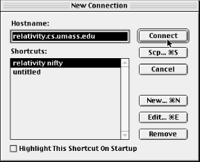

NiftyTelnet SSH is a minimal, freely
distributable SSH client for the Macintosh by Jonas Walldén.
Based on NiftyTelnet by Chris Newman, NiftyTelnet SSH is a graphical
terminal program with SSH-1 support added. It supports remote logins
and secure file copying. It also remembers your public key passphrase
(i.e., caching it in memory) if you open multiple terminal windows.
This isn't an agent, however.
NiftyTelnet's best features are that it is free, and it works
pretty well. On the negative side, it doesn't support
forwarding of any kind, and it can't generate SSH key pairs. In
order to use public-key authentication, you need another SSH program
to generate keys for your identity, such as
from SSH1.
Our discussion of NiftyTelnet SSH is based on Version 1.1 R3.
17.1. Obtaining and Installing
NiftyTelnet
SSH can be downloaded from:
http://www.lysator.liu.se/~jonasw/freeware/niftyssh/
and unpacked with Stuffit Expander into a folder of your choice. You
may copy the folder to any location on your Macintosh.
When NiftyTelnet SSH is run for the first time, it presents the
New Connection dialog box
shown in
Figure 17-1. Click the New button to enter
the settings for an SSH client/server connection.
Figure 17-2 highlights the important fields for
configuring SSH: Host Name, Protocol, and RSA Key File. For the Host
Name, enter the name of a remote host running an SSH server, and set
the Protocol to an SSH encryption algorithm (DES, 3DES, or Blowfish).
If you plan to use
password
authentication, leave the RSA Key File line empty. Otherwise, if you
have already installed a private key file on your Mac, fill in the
location. You must
list the entire path to the file, with folder names separated by
colons. For example, if your key file
Identity
is found by opening the disk MyDisk, then the folder SSH, and then
the folder NiftyTelnet, enter:
MyDisk:SSH:NiftyTelnet:Identity
Once your settings are complete, connect to the remote host using
password authentication. Copy your public key onto the remote host,
log out, and reconnect using public-key authentication.

Figure 17-1. NiftyTelnet New Connection dialog box